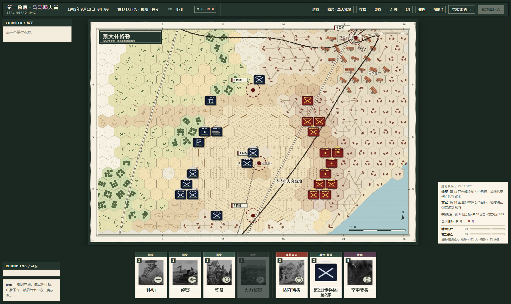
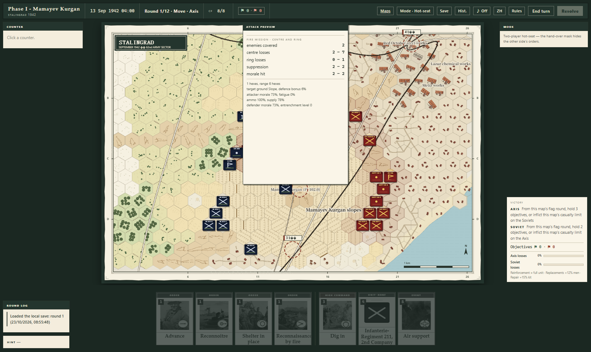
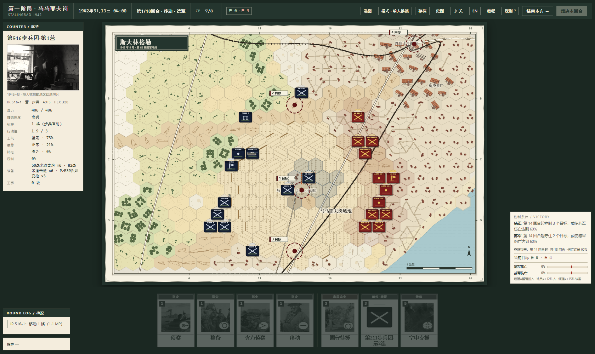
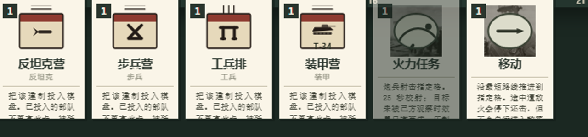

斯大林格勒，一小时一回合
连/营级六角格兵棋。216 米一格；四张战场；三套牌库；ZOC、渗透、炮兵火力任务、工事与包围。单机人机对战或双人同屏，中文 / English。




下载
未签名程序可能触发 Windows SmartScreen：点“更多信息”→“仍要运行”。校验值见 SHA256SUMS.txt。安装包不包含源代码。
1.1.0 要点
三牌库移动 / 攻击 / 特殊；每阶段 4 普通 + 3 特殊；特殊牌跨阶段保留。
战场马马耶夫岗、巴尔卡与工厂区、市中心与渡口、下城。
战斗216 米一格；ZOC、渗透移动、炮兵火力任务、工事、包围断补给。
模式单机人机对战 / 双人同屏。
English
Company/battalion hex wargame of Stalingrad. 216 m per hex, four boards, three decks, artillery fire missions, ZOC and encirclement. Single-player vs AI or two-player hotseat. Chinese / English UI.
Credits / licence
Historical photographs are credited in CREDITS.md. This is a freeware binary release; source code is not included. See LICENSE.txt.